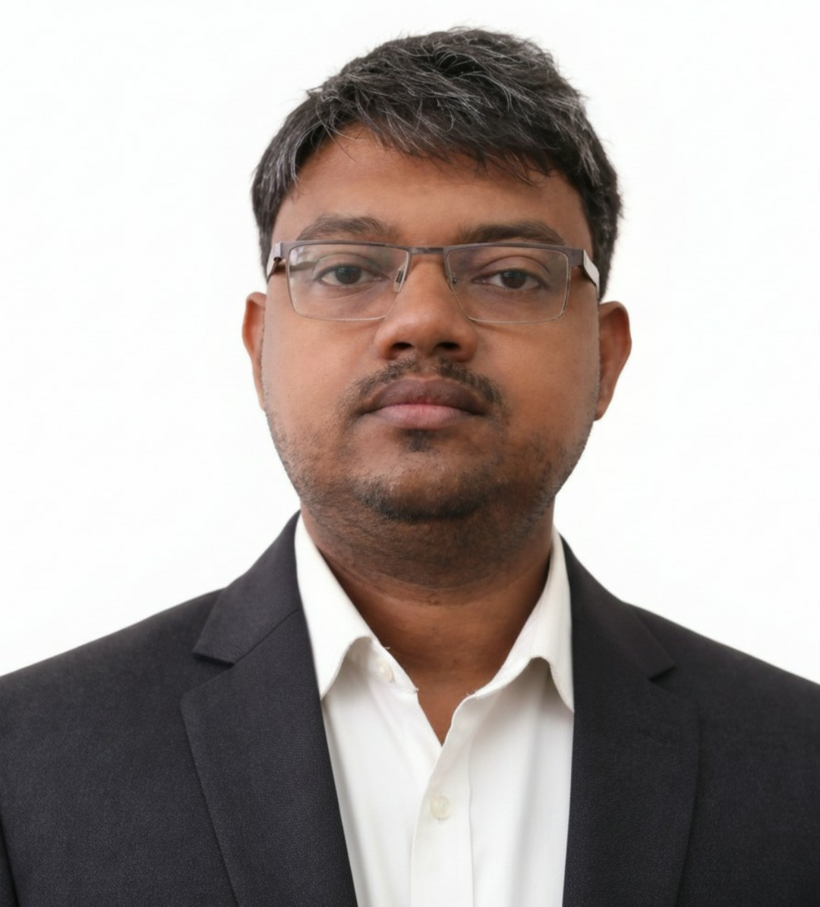

| Born | Andhra Pradesh, India |
| Nationality | Indian |
| Occupation |
Mechanical Engineer Entrepreneur Researcher Educator |
| Known for |
Mechanical Design Robotics Additive Manufacturing Engineering Education |
| Organization | Namoona Enterprises Pvt. Ltd. |
| Title | Founder & Managing Director |
| Net worth |
₹9.6 lakh (estimated, 2026) |
| Fields |
Mechanical Engineering Aerospace Engineering Product Development |
Angajala Nikhil Chaitanya is an Indian mechanical engineer, entrepreneur, educator, and researcher known for his work in mechanical design, digital manufacturing, robotics, aerospace engineering, and engineering education. He is the founder and Managing Director of Namoona Enterprises Pvt. Ltd. . and has contributed to academia, industry, and startup ecosystems through interdisciplinary work spanning product development, additive manufacturing, and aerospace certification.
Chaitanya was born in Andhra Pradesh, India. He earned a Bachelor of Technology degree in Mechanical Engineering with a CGPA of 9.53 and later completed a Master of Technology in Machine Design with distinction, obtaining a CGPA of 8.45.
In 2025, he commenced doctoral research in Mechanical Engineering with a specialization in Mechanics and Design.
Chaitanya began his professional career in engineering and technology roles involving digital manufacturing, software development, and product design. His experience spans engineering design, manufacturing systems, simulation, programming, automation, and product lifecycle management.
Between 2022 and 2024, Chaitanya served as an Assistant Professor of Mechanical Engineering. He taught Engineering Mechanics, Engineering Drawing, Industrial Robotics, Product Design, Data Structures, C Programming, and Python Programming.
In 2025, Chaitanya joined Hindustan Aeronautics Limited (HAL) as a Junior Specialist (Mechanical). His work involves aerospace engineering documentation, Drawing Applicability List (DAL) management, configuration control, certification support, and engineering compliance activities.
In 2024, Chaitanya founded Namoona Enterprises Pvt. Ltd. , an engineering and technology company focused on product innovation, digital manufacturing, educational technology, and engineering consultancy.
His research interests encompass mechanical design, mechanism synthesis, robotics, additive manufacturing, ocean engineering, computational design, and artificial intelligence applications in engineering.
Outside his professional responsibilities, Chaitanya maintains a strong interest in engineering innovation, product creation, robotics, entrepreneurship, and emerging technologies. He advocates hands-on learning, self-directed technical development, and the application of engineering knowledge to solve practical societal challenges.
Chaitanya represents a new generation of Indian engineers who combine expertise in mechanical engineering, software technologies, advanced manufacturing, and entrepreneurship. His work reflects a vision of democratizing engineering innovation through education, digital tools, and startup-driven product development.